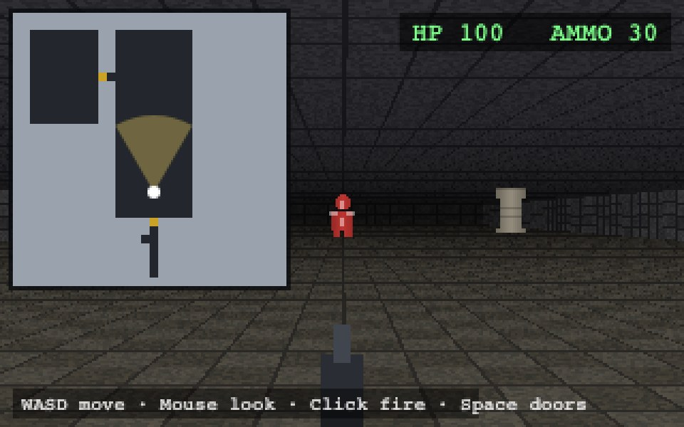

25 November 2026 · Agentic task loop · first-person raycaster
Raycaster Shooter · Inkling 2 Mini · Splash 1.7.3 · UD-Q8_K_XL with vision · Tenaz main + Pi · thinking low
Tenaz ended COMPLETE_WITH_GAPS after 45 min 35 s, 33 sessions and 14 task cards: 12 done, T011 dropped and T014 left to do. Every task review accepted first time; both final reviews, which looked at screenshots, asked for changes. Playable, and Inkling's best Raycaster game so far: it fills the window, has brick, stone and wood walls and a textured floor and ceiling, two rooms joined by sliding doors that open and are drawn as doors, mouse look on the canvas, and an enemy that falls and stays down after three hits. But the minimap covers 128 by 128 of the 320 by 200 frame and hides the barrel at spawn (the open T014), the enemy never hurts the player and ends up standing inside them, out of sight, and a thin dark vertical line runs down the middle of every frame.

What was checked
- Runner final state COMPLETE_WITH_GAPS on 25 November 11:24:06.985 UTC. Bootstrap passed its three steps first time (18 requirements, none manual; 9 tasks). T001 to T010, T012 and T013 passed verify and review on their first attempt. T011 (make the spawn barrel partly visible) was blocked: it added no T011 check and its change broke the done task's T005.sprites check, so Tenaz logged a conflict; a replan dropped it and added T013, which moved the barrel and re-aimed that check. Final review 1 asked for changes and added T010 (draw the door distinctly), T011 and T012 (use stone and wood walls across the map); final review 2 asked for changes again and added T014 (the barrel sliver is drawn behind the minimap), which was left to do. Three replans; two added nothing.
- Runner events: 33 sessions, none stopped or failed; no reverts, context compactions, provider errors, capacity limits or engine retries. The watchdog steered 006-builder-T002 to run its own checks and 024-builder-T010 after a large reply and on context pace. One reply, in 006-builder-T002, stopped at the 16,384-token output limit; the stop reasons are 298 tool use, 33 stop and that one.
- Configuration: the UD-Q8_K_XL thinking-low setup with vision. Pi 1.6.0 over RPC with the openai-completions provider splash, thinking low, text and image input, a 131,072-token context window and max_tokens 16,384; Tenaz main 3f43405 with defaults plus --vision, temperature 1.0, generic engine, sandbox off. Against the runs without vision, the go script adds only --vision, and the engine start script only --model-dir, --mmproj and --draft-model (plus comments and the two path variables they use); the stop and launch scripts, brief and Tenaz binary are byte-identical. Tenaz's preflight reported reasoning, cache, tools and vision true; its image check answered 'red blue'.
- Images: Pi's read tool returned the pixels of PNG screenshots to the model 13 images in 4 sessions (021-builder-T009 3, 022-reviewer-T009 3, 023-final-reviewer 2, 033-final-reviewer 5); no tool result in the run's logs carries imageUnsupportedByModel, which the runs without vision got. All are screenshots the model took of its own game with Playwright.
- Engine metrics: one Splash process wrote 789 Done summaries over both vision runs. Requests 1 and 2 are Claude's own image check before this run's init, 3 to 8 vision run 1's preflight, 9 to 340 vision run 1, 341 to 346 vision run 2's preflight and 347 to 789 vision run 2. This run's 332 proxy records match summaries 9 to 340 one-to-one, in order, contiguously and uniquely by (prompt, output, cached). For all 33 sessions the matched summaries' fresh input, cached and output tokens equal the usage Tenaz journaled. TTFT comes from Splash's 'TTFT of request' lines.
- Memory: Tenaz's 157 host samples report memory pressure level 1 (normal) throughout. Wired memory went from 24.2 GiB at the first sample to a maximum of 52.3 GiB, and free memory fell to 0.16 GiB at its lowest. Swap use ranged from 14.6 to 16.6 GiB, already about 14 GiB before the run. Tenaz sampled Splash's Python parent, not its engine, so no engine footprint is recorded.
- `verify --all` on a clean clone of the final commit 638bb19 with the run's node_modules: 12 of 13 passed; T009.docs failed because it wants 3 screenshots in shots/, which git ignores. After the project's own `node tools/shot.mjs` wrote them, 13 of 13 passed, as Tenaz recorded. Model-written checks that test state, math and file presence, not playability.
- Played by Claude with Playwright in Chromium's new headless mode, against the run's build served by Vite, holding keys. Map: 32 by 32 cells. Spawn (16.5,28.5) faces north down a one-cell corridor at the closed main door (16,24), 4 cells ahead, drawn as a wooden door. W, then Space, opened it; it slid away and the player walked into the main room (columns 12 to 20, rows 2 to 23), with stone walls, a pillar and the enemy. From there a short corridor at row 7 leads through a second door (10,7) into the west room (columns 2 to 9, rows 2 to 12), with wood walls; it opened with Space and the player walked in. Both rooms can be reached.
- Mouse look: a click on the canvas calls canvas.requestPointerLock, and mousemove turns the player only while the canvas holds the lock, which is correct in a normal browser. Headless Chromium refuses pointer lock, so turning was tested with the lock faked: mouse moves turned the player. A/D strafe; no key turns.
- Combat: the enemy at (16.5,6.5) chases the player when it sees them. Shots at it: the third hit knocked it over and it stayed down on the floor. Health stayed 100 throughout: no code lowers it. The enemy walks to the player's exact position, where it is no longer drawn, and the player can walk through it.
- Look: the canvas is drawn at 320 by 200 and scaled to fill the window with crisp pixels; walls carry brick, stone and wood textures, the floor and ceiling are textured per pixel. The minimap is 128 by 128 of the 320 by 200 frame and covers the barrel at spawn, which is the open T014. A thin dark vertical line runs down the middle of every frame.
- Public artifact: `vite build --base ./` of the final commit 638bb19 in the clean clone; its JavaScript bundle is byte-identical to the run's own dist, and its index.html differs only in the script path (./assets in place of /assets). Plain canvas code; the capture fetched only from the local server. Screenshot: a fresh headless capture of the published build at 960x600, just through the opened main door, with the enemy and a pillar ahead.
Limits of this evidence
Completion is the runner outcome. Inkling 2 Mini as Unsloth's UD-Q8_K_XL GGUF on Splash 1.7.3 with its BF16 vision projector and the DFlash2 drafter at a 128K context, Pi thinking low with image input, temperature 1.0, Tenaz main 3f43405 with --vision: the UD-Q8_K_XL thinking-low setup with vision added (and Splash moved from 1.7.2 to 1.7.3, which is what serves the vision). The model looked at 13 screenshots, and both final reviews used them to send back visible defects: the door drawn like a wall, single-texture walls, the hidden barrel. The game is the most complete Inkling has built on this brief. The two UD-Q8_K_XL runs without vision differed more from each other than 8-bit from 4-bit, so one run at temperature 1.0 does not show how much of the gain is vision. Decode median 68.5 tok/s, against 71.6 and 66.1 for the two UD-Q8_K_XL runs without vision.
Configuration
The model, serving engine and agent used for this execution.
| Field | Value | Detail |
|---|---|---|
| Model · primary | Inkling 2 Mini · primary · reasoning low (Pi thinking level low; Splash started with --default-reasoning-effort low and logged every request as 'effort low'). Pi counted 66,002 reasoning tokens. | Unsloth Dynamic UD-Q8_K_XL GGUF (Inkling-2-Mini-UD-Q8_K_XL.gguf, 22,867,452,896 bytes, sha256 2da51788d43a17e1f033bec420fa83ba9cb87ac1f0130dc9135a4d2ed2678b68), the same file as the two UD-Q8_K_XL runs without vision, passed to Splash with --model-dir. Vision projector mmproj-BF16.gguf from the same repository revision (641,805,760 bytes, sha256 2c165c78790e78a3f45a2d1e9e931083e52ee69d45ff2a0dc9c281fdf1a666e7), passed with --mmproj. |
| Checkpoint · primary | unsloth/Inkling-2-Mini-GGUF:UD-Q8_K_XL | primary model artifact · revision 8078d149286eec7193795413b9e0643da6d11fa1 |
| Model · drafter | Inkling 2 Mini DFlash2 · drafter | — |
| Checkpoint · drafter | incoai/Inkling-2-Mini-DFlash2 | drafter model artifact · revision 4f9088ea66c21f2b99ed657d1941c306b03e84d2 |
| Runtime | Splash 1.7.3 · Homebrew formula splash 1.7.3; the engine start script wrote `splash --version` (Splash 1.7.3) before starting it · One splash serve process, started at 10:37:35 UTC on 25 November by the run's start script and serving both vision runs; registered with Tenaz as a generic engine with start and stop scripts and reached through Tenaz's proxy. --model unsloth/Inkling-2-Mini-GGUF:UD-Q8_K_XL --model-dir <the cached UD-Q8_K_XL GGUF> --mmproj <the cached mmproj-BF16.gguf> --draft-model <the cached DFlash2 snapshot> --offline --no-webui --max-context 128K --default-reasoning-effort low --idle-release off. Startup log: 'Ready · context 128K' (no 'text only'), SSD prefix cache up to 32.0 GiB, routed experts held in memory (15,553 MiB), --verify-rows auto; /v1/models listed vision true with text, image and pdf input. Temperature 1.0 pinned through Tenaz's proxy; top-p and top-k left to Splash. Pi's max_tokens 16,384 (fixed in this Tenaz build). mode | inference engine and exact build |
| Harness | Pi coding agent over RPC driven by Tenaz main 3f43405 (it reports 0.8.0 (3f43405)) 1.6.0 | the agent or client that drove the run |
| Runner | Tenaz main · build 3f43405 after 0.8.0 (unreleased) | open-source runner, github.com/aartiles/tenaz · how the runner evolved |
| Hardware | Apple MacBook Pro · 64 GB unified memory | hardware recorded for this execution |
| Workload | Raycaster Shooter · revision 1 | One-shot raycaster brief by @ddalcu, as posted by @Beamsters1, used verbatim as the Tenaz brief (sha256 5c3cf17c..., the same file as the other Raycaster runs); the local model wrote its own spec, verify and task plan. Per-session context budget 85,196 tokens (0.65 of 131,072). With vision: Tenaz init --vision declared text and image input to Pi, and Splash loaded the projector, so builders and reviewers could look at screenshots of the game. No operator action after launch. The first run of this setup. |
| Context window | 131,072 tokens | maximum context configured for the serving runtime |
| Repetitions | 1 | executions recorded for this workload; one means an indicative result, not an estimate |
Inference measurements
Engine-side rates for this run. Each figure states its own statistic; figures from different runs are not interchangeable.
| Metric | Value | Definition |
|---|---|---|
| TTFT · median | 0.294087 s | Median engine-reported TTFT ('TTFT of request' lines, millisecond precision) across matched requests. · n=332 · 90th percentile 1.99 s, mean 0.780 s, maximum 16.7 s; 2 requests over 10 s. Includes the run's cache mix and image prefill; not a prefill rate. |
| Decode · per-request median | 68.55 tok/s | Median of Splash's per-request decode rate across matched requests. · n=332 · 10th percentile 51.7, 90th percentile 102.9 (linear interpolation). Median 66.9 below 16K prompt tokens (193 requests), 70.9 from 16K to 32K (129), 67.8 from 32K (10). |
| Decode · output-weighted | 65.4647 tok/s | Total output tokens divided by the sum of each request's output tokens over its decode rate. · n=332 |
| Tokens per decode cycle · drafter | 4.1623 tokens/cycle | Output-token-weighted mean of Splash's tokens per decode cycle with the DFlash2 drafter (median 4.1). · n=332 · Splash logs tokens per cycle, not drafted and accepted counts, so this is not an acceptance percentage. |
| Host wired memory · median | 36.78 GiB | Median host wired memory across Tenaz's 30-second samples from start to end of the run. · n=157 · 24.2 GiB at the first sample, maximum 52.32 GiB. Host-wide, includes every process. |
| Swapped in during the run | 0.464 GiB | Swap-in pages summed over Tenaz's memory samples (30,420 pages of 16 KiB); host-wide swap I/O, not resident memory. · n=157 · Memory pressure level 1 (normal) in every sample. |
Agent session counters
Agent-wide usage totals. These include reasoning, tool calls and waiting, and are not model decode speed.
| Metric | Value | Definition |
|---|---|---|
| Run elapsed | 45.6 min | Session 001 start after the preflight (2026-11-25T10:38:32.065371Z) to COMPLETE_WITH_GAPS (2026-11-25T11:24:06.985Z); includes tools, checks and reviews. · n=1 · 45 min 34.9 s; no pauses. |
| Agent sessions | 33 sessions | All harness sessions: 3 bootstrap, 13 builder, 12 reviewer, 3 replan and 2 final reviewer. · n=1 |
| Sessions ended early | 0 sessions | Sessions with ok=false. · n=33 |
| Operator interventions | 0 actions | No pauses, relaunches, configuration changes or edits after the first session started. · n=1 |
| Model responses | 332 responses | All proxy request records of this run; none ended in error. · n=1 |
| Matched model requests | 332 requests | Proxy records matched one-to-one, in order and uniquely to Splash Done summaries by (prompt, output, cached). · n=332 · Splash summaries 1 to 8 (Claude's image check before init and this run's preflight) and those of vision run 2 are excluded. |
| Tool calls | 308 calls | Sum of harness tool_calls across all 33 session records. · n=33 |
| Context compactions | 0 compactions | Compaction count across all session records. · n=33 |
| Responses stopped at the output limit | 1 responses | Proxy records that stopped at the 16,384-token output limit. · n=332 · One reply in 006-builder-T002 hit the limit; the next largest was 6,890 tokens. |
Context and token counters
Token totals as reported by the harness or engine. Cached and cumulative figures are not additive with fresh input.
| Metric | Value | Definition |
|---|---|---|
| Maximum prompt context | 38,722 tokens | Largest prompt across matched requests; not the configured server window. · n=332 · Tenaz's per-session context peak, which adds the reply, reached 38,915 tokens of the 85,196 budget, in 024-builder-T010. |
| Cumulative input | 5,563,878 tokens | Sum of total prompt tokens across matched requests, including repeatedly reused context; not unique input. · n=332 |
| Cached input | 5,230,496 tokens | Sum of prompt tokens Splash reported cached across matched requests. · n=332 |
| Fresh input | 333,382 tokens | Total prompt minus cached prompt tokens across matched requests. · n=332 |
| Output tokens | 154,651 tokens | Sum of output tokens across matched requests, reasoning included. · n=332 |
| of which reasoning output | 66,002 tokens | Reasoning tokens in Pi's usage, summed over the 33 journaled sessions. · n=33 · 42.7% of the output. |
| Prompt-cache token share | 94.0081 % | Cached prompt tokens divided by total prompt tokens, weighted by tokens across matched requests. · n=332 |
Recorded check counters
Counts from the checks recorded with this run.
| Metric | Value | Definition |
|---|---|---|
| Tasks completed | 12 tasks | Final task cards marked done; T011 dropped and T014 left to do. · n=14 |
| Reviews returning changes | 2 reviews | Review verdicts returning CHANGES: both final reviews. All 12 task reviews returned ACCEPT on the first attempt. · n=14 |
| Project checks passing | 13 checks | Checks passing in `verify --all` on a clean clone of the final commit, rerun after the run once the project's screenshot tool had written shots/ (12 of 13 before, as T009.docs needs those git-ignored screenshots). · n=13 · Model-written checks, not an independent acceptance suite. |
Request records & provenance
332 numeric request records in proxy order, each matched one-to-one to a Splash Done summary by total prompt, output and cached tokens. TTFT comes from Splash's 'TTFT of request' lines and decode from its Done lines. Preflight and other runs' summaries in the shared log are excluded. No prompts, images, tool results, session identifiers or local paths are included.
Run ID: 2026-11-25-inkling-2-mini-udq8kxl-mmproj-splash-v173-thinking-low-tenaz-main-3f43405-pi-raycaster-shooter-vision
One execution, with checks transcribed from the retained record. A completed session is not a quality score. Measurement method · All runs